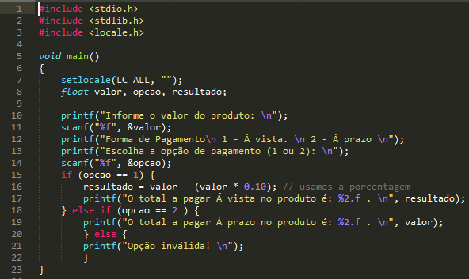
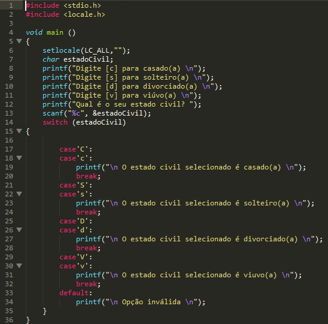
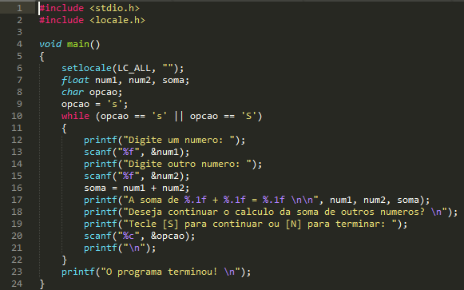
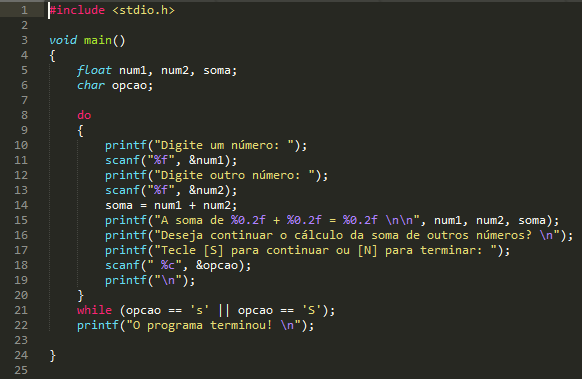
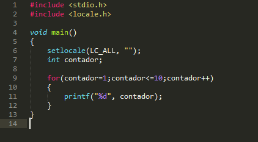

Ligia Rodrigues Prete

Possui Graduação em Processamento de Dados pela Universidade Paulista (1999). Pós-Graduação Lato Sensu em Informática na área de concentração em Desenvolvimento de Sistemas sob a Tecnologia Cliente/Servidor e Internet pelo Centro Universitário de Rio Preto (2001). Licenciatura Plena em Informática pelo Programa Especial de Formação Pedagógica de Docentes para as Disciplinas do Currículo da Educação Profissional de Nível Médio do Centro Estadual de Educação Tecnológica Paula Souza (2008). Pós-Graduação Stricto Sensu (Mestrado) em Engenharia Elétrica na área de concentração em Automação pela Universidade Estadual Paulista Júlio de Mesquita Filho (2011). Pós-Graduação Stricto Sensu (Doutorado) em Engenharia Elétrica na área de concentração em Automação pela Universidade Estadual Paulista Júlio de Mesquita Filho (2016). Atualmente é docente do Centro Estadual de Educação Tecnológica Paula Souza (CEETEPS) na Faculdade de Tecnologia de Jales "Professor José Camargo". Tem experiência na área de Ciência da Computação, com ênfase em desenvolvimento de sistemas, atuando principalmente nos seguintes temas: programação, banco de dados, redes e automação.
Disciplina: Algoritmo e Lógica de Programação
Iniciar a formação em programação de computadores por meio de uma linguagem facilitadora do aprendizado de algoritmos, preferencialmente alguma uma linguagem de amplo emprego no mercado. Desenvolver as habilidades básicas de programação de computadores aplicando os conceitos estudados.
If e Else
A instrução "if" funciona assim:
– A condição é avaliada;
– Se o resultado da condição é VERDADEIRO, executa a instrução1;
– Senão (else) sendo o resultado da condição FALSO, executa a instrução2.
Switch
A instrução switch adapta-se à tomada de decisões em que o número de possibilidades é elevado (em geral maior que 2, se não usa-se o if .. else), de forma a reduzir a complexidade de if .. else consecutivos e encadeados.
Na sintaxe do switch, a expressão representa qualquer informação cujo resultado seja um valor numérico dos tipos char, int ou long. A expressão é avaliada e, em seguida, o switch compara o resultado da expressão com o valor de cada constante que segue em cada um dos case. O conjunto de todos os valores possíveis para a expressão é colocado entre chaves.
While
A técnica denominada estrutura de repetição ou laço de repetição, é uma estrutura de programação que facilita repetir determinados trechos de código. Essa técnica reduz o trabalho de programação, principalmente quando é preciso repetir várias vezes alguma ação importante no programa.
A estrutura de repetição faz a verificação da condição para executar as instruções subordinadas de um bloco adjacente após conferir a validade do resultado lógico de uma condição estabelecida.
Sendo o resultado lógico da condição verdadeiro, são executadas as instruções subordinadas do bloco adjacente. No momento em que o resultado lógico da condição não é mais verdadeiro, o laço de repetição é automaticamente encerrado.
Do... While
A estrutura de repetição do .. while realiza o teste da condição no final do corpo do laço (instrução ou bloco de instruções) e não antes, como acontece com o laço while.
Dessa forma o corpo do laço do .. while é executado pelo menos uma vez, enquanto no laço while o corpo do laço pode nunca ser executado (caso a condição seja falsa).
For
A estrutura de repetição for adapta-se particularmente a situações em que o número de iterações é conhecido. A instrução para .. faca (algoritmo) e for (Linguagem C) executa uma instrução ou bloco de instruções enquanto uma determinada condição for verdadeira.